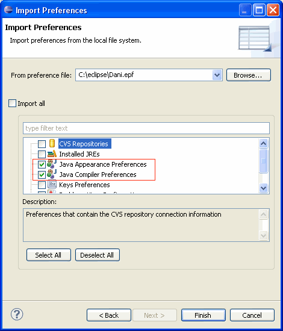
Several preferences have been added to the Java code formatter
Formatter profiles can be configured on the Java > Code Style > Formatter preference page.
- Insert a new line after a label:
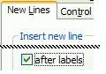
For example, with this preference activated as shown above, the loop will be placed on a new line after its label:
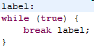
- Align element-value pairs in annotations:
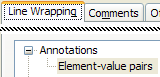
For example, the two annotation arguments are each put on a new line if the chosen alignment policy for this preference is Wrap all elements, every element on a new line and if the Force split check-box is selected:

- Align method declaration:
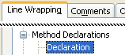
For example, the modifier, the return type and the name of the method can be each one placed on a new line if the chosen alignment policy for this preference is Wrap all elements, every element on a new line and if the Force split check-box is selected:
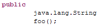
- Control the formatting in code sections:
This preference allows you to define one tag to disable and one tag to enable the formatter (see the Off/On Tags tab in your formatter profile):
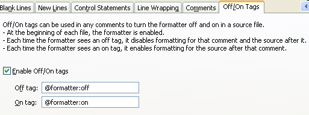
Here is an example of a formatted code which is using code sections with the tags defined as shown above:
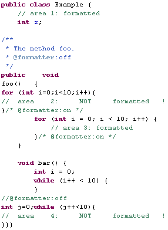
- New strategy for the Java formatter when wrapping nested method calls:
This preferences allows you to disable the new strategy when wrapping nested method calls:

Now, the Java formatter tries to wrap the outermost method calls first to have a better output when wrapping nested method calls.
Here is an example of a formatted code where the formatter has wrapped the line earlier, e.g. between the arguments of the outermost message call. Doing this, each nested method calls are kept on a single line:
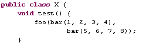
Note that this preference is checked by default (i.e. the new behavior is automatically activated). If the backward compatibility regarding previous versions' formatter behavior (i.e. before 3.6 version) is necessary, then this preference has to be unchecked in order to get the previous formatter behavior back.
Note also that the new strategy currently only applies to nested method calls, but that might be extended to other nested expressions in future versions
Several preferences have been added to the Java comment formatter preferences (see the Comments tab in your formatter profile).
Formatter profiles can be configured on the Java > Code Style > Formatter preference page.
- Expand or condense the beginning and the end of block and Javadoc comments:
This preference lets you to decide whether the beginning and the ending characters of a multi-line comment will be placed on separate lines or not:
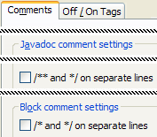
For example, with these preferences not activated as shown above, a block comment can be formatted to take less lines in the code:
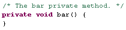
- Skip formatting of line comments starting at first column:
This preference lets you decide whether line comments which start at the first column of the file will be formatted or not :
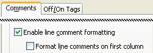
For example, with this preference not activated as shown above, the first comment is untouched after the formatting:
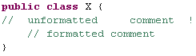
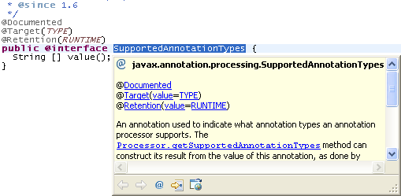
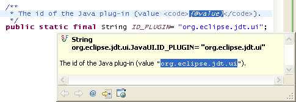
continue statements.
To preserve the semantics of the existing code, the selection needs to include the last statement of the loop.
In the extracted method, continue statements are changed to return:
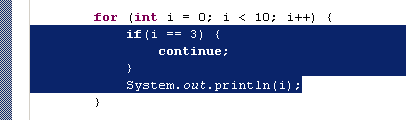
For a selection that would need multiple return values in the extracted method, Eclipse now lists the conflicting variables in the error message: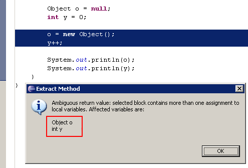
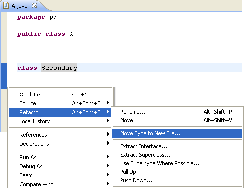
@Override for method implementations in 1.6 mode @Override annotation in the case where a method implements
a method from an interface:
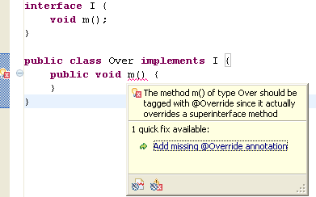
This new behavior can be controlled via Java > Compiler > Errors/Warnings in the Annotations section and configured for Clean Up and Save Actions.
Note: This is reported only in 1.6 mode as @Override annotations are not expected on a method implementation in 1.5.
@SuppressWarnings annotationIn case it is not possible to update the code with the new token the suppressRawWhenUnchecked=true system property can be set when starting Eclipse.
@SuppressWarnings for optional errors@SuppressWarnings annotation can now also suppress optional compile errors:
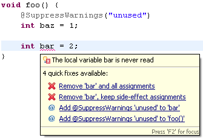
In this example, Local variable is never read has been set to Error.
This behavior can be enabled on the Java Compiler > Errors/Warnings preference page in the Annotations section with the check box Suppress optional errors with '@SuppressWarnings'.
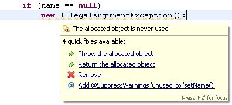
This detection is disabled by default and can be enabled on the Java > Compiler > Errors/Warnings preference page at the end of the Potential programming problems section.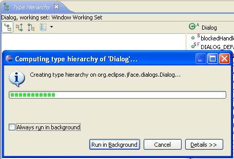
Your workbench is no longer blocked while a big hierarchy is computed.
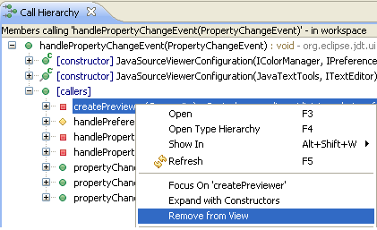
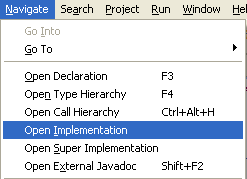
This action is enabled on text selections in the Java editor for overridable methods and directly opens the implementation in case there's only one, or shows all the concrete implementations for that method in the hierarchy of its declaring type, using the Quick Type Hierarchy.
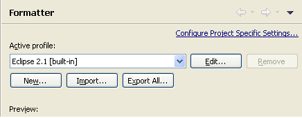
org.eclipse.jdt.junit plug-in have been split off into the new plug-in
called org.eclipse.jdt.junit.core. This change does not affect existing clients of the
org.eclipse.jdt.junit plug-in, but allows new clients to use only the launcher without
requiring all the UI dependencies.
<skipped> nodes
<skipped> nodes.
Eclipse and the Ant JUnit task do not generate such nodes, but e.g. test result files from Apache Maven
do generate them for ignored JUnit4 tests.
For complete details on the steps required to transition to using JUnit4 or to continue using JUnit3, please see:
http://wiki.eclipse.org/Eclipse/Testing/JUnit4_Changes.
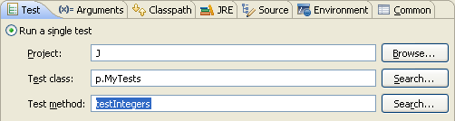
When the test method is empty, all tests in the class will be run.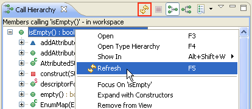
This will refresh the selected elements and their direct children. The action in the toolbar has been renamed to Refresh View and still refreshes the entire view.
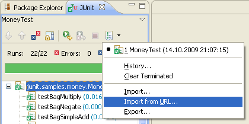
Supported test run formats are XML files exported from the JUnit view or generated by the Ant JUnit task.
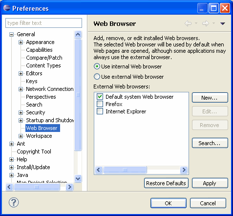
public class Main {
private static final String MAIN_INDIRECT = "Main.indirect"; //$NON-NLS-1$
public static void main(String[] args) {
System.out.println(Messages.getString("Main.direct")); //$NON-NLS-1$
System.out.println(Messages.getString(MAIN_INDIRECT));
}
}
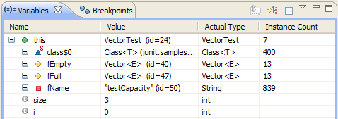
You can also display the instance count of a selected type in an editor or editor outline and selecting Instance Count... from the context menu. The result is displayed in a dialog.
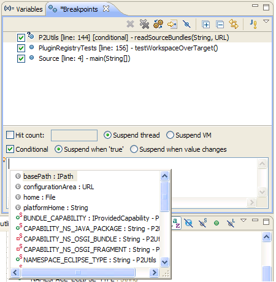
For example, a Java line breakpoint allows its condition to be edited in place with content assist. Use the File > Save (Ctrl+S) action to save a condition that has been edited. Radio button properties are saved immediately.
Class-Path: attribute in the MANIFEST.MF:
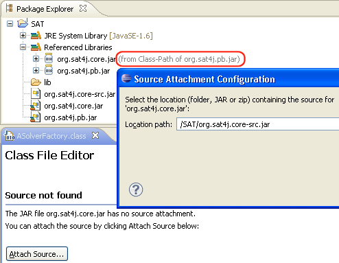
Messages.getResourceBundle() are no longer listed as undefined keys.

The concrete errors can be seen in the Problems view, and if you open the view menu and select Group By > Java Problem Type, they all show up in the Build Path category:
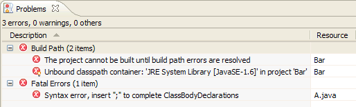
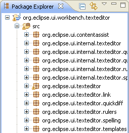 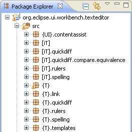
Rules for this example:
org.eclipse.ui={UI}
org.eclipse.ui.texteditor={T}
org.eclipse.ui.internal.texteditor=[iT]
The abbreviation rules can be configured in Preferences > Java > Appearance > Abbreviate package names.